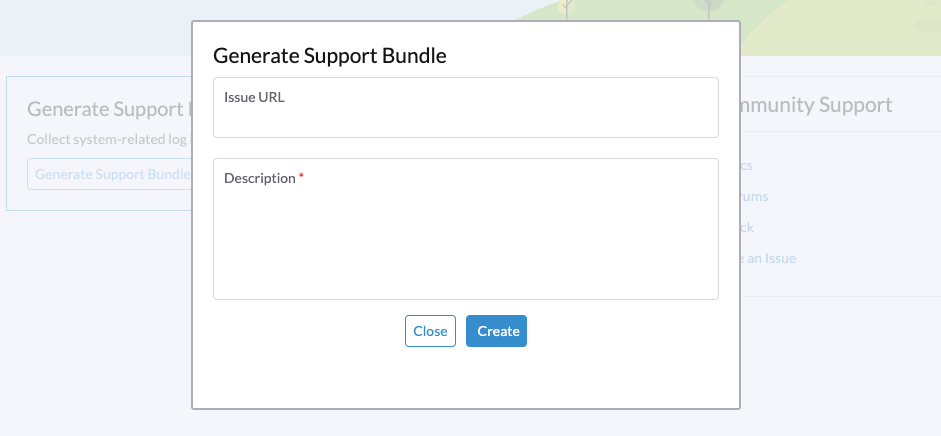

Cluster-Probleme
Fehler beim Bereitstellen eines Multi-Node-Clusters aufgrund falscher HTTP-Proxy-Einstellungen
ISO-Installation ohne Konfigurationsdatei
HTTP-Proxy während der Installation konfigurieren
In einigen Umgebungen konfigurieren Sie HTTP-Proxy der Betriebsumgebung während der Installation.
HTTP-Proxy nach der Bereitstellung des ersten Knotens konfigurieren
Nachdem der erste Knoten erfolgreich installiert wurde, melden Sie sich in der Benutzeroberfläche an, um HTTP-Proxy der Systemeinstellungen zu konfigurieren.
Dann fahren Sie fort, weitere Knoten zum Cluster hinzuzufügen.
Ein Knoten wird nicht verfügbar
Das Problem, das Sie möglicherweise antreffen:
The first node is installed successfully. The second node is installed successfully. The third node is installed successfully. Then the second node changes to Unavialable state and cannot recover automatically.
Behebung
Wenn die Knoten im Cluster nach der erfolgreichen Installation des ersten Knotens den HTTP-Proxy nicht zur Kommunikation untereinander verwenden, müssen Sie http-proxy.noProxy gegen das von diesen Knoten verwendete CIDR konfigurieren.
Zum Beispiel weist Ihr Cluster IPs aus dem CIDR 172.26.50.128/27 den Knoten über DHCP/statische Einstellungen zu, bitte fügen Sie dieses CIDR zu noProxy hinzu.
Nachdem Sie dies eingestellt haben, können Sie weiterhin neue Knoten zum Cluster hinzufügen.
Für weitere Details verweisen Sie bitte auf Problem 3091.
ISO-Installation mit einer Konfigurationsdatei
Wenn eine Konfigurationsdatei bei der ISO-Installation verwendet wird, konfigurieren Sie bitte das richtige http-proxy in Systemeinstellungen.
PXE-Boot-Installation
Wenn PXE-Boot-Installation verwendet wird, konfigurieren Sie bitte das richtige http-proxy in Betriebsumgebung und Systemeinstellungen.
Erstellen Sie ein Support-Bundle
Benutzer können ein Support-Bundle in der Benutzeroberfläche mit den folgenden Schritten erstellen:
-
Klicken Sie auf den
SupportLink unten links in der Benutzeroberfläche.
-
Klicken Sie auf die
Generate Support BundleTaste.
-
Geben Sie eine nützliche Beschreibung für das Support-Bundle ein und klicken Sie auf
Create, um ein Support-Bundle zu erstellen und herunterzuladen.
|
Wann immer Sie auf ein Problem stoßen, das möglicherweise mit Workloads in benutzerdefinierten Namespaces zusammenhängt, konfigurieren Sie die Einstellung support-bundle-namespaces, um diese Namespaces als Datenquellen einzuschließen. Das Support-Bundle sammelt nur Daten aus den konfigurierten Namespaces. Bei Timeout-Fehlern können Sie den Wert der Einstellung support-bundle-timeout anpassen und dann den Prozess zur Erstellung des Support-Bundles neu starten. Wenn Sie beabsichtigen, ein nicht standardmäßiges Container-Image zu verwenden, können Sie die Einstellung support-bundle-image konfigurieren. |
Für Informationen zum Sammeln von Protokollen und Konfigurationsdateien des Gastclusters siehe Gastcluster-Protokollsammlung.
Manuell eine Support-Bundle-Datei herunterladen und aufbewahren
Standardmäßig wird eine Support-Bundle-Datei automatisch erstellt, heruntergeladen und gelöscht, nachdem Sie auf Erstellen in der Benutzeroberfläche geklickt haben. Sie möchten jedoch möglicherweise aus verschiedenen Gründen eine Datei aufbewahren, einschließlich der folgenden:
-
Sie können die Datei aufgrund von Netzwerkverbindungsfehlern und anderen Problemen nicht herunterladen.
-
Sie müssen eine zuvor erstellte Datei verwenden, um Probleme zu beheben (da die Erstellung einer Support-Bundle-Datei Zeit in Anspruch nimmt).
-
Sie möchten Informationen anzeigen, die nur in einer zuvor erstellten Datei vorhanden sind.
Selbst wenn die Datei im Cluster bleibt, bietet die Benutzeroberfläche keinen Download-Link an. Verwenden Sie den folgenden Workaround, um eine Support-Bundle-Datei zu erstellen, manuell herunterzuladen und aufzubewahren:
Die Datei erstellen und automatisches Herunterladen verhindern
-
Klicken Sie in der Benutzeroberfläche auf Support-Bundle generieren.
-
Wenn der Fortschrittsindikator 20 % bis 80 % erreicht, schließen Sie den Browser-Tab, um das automatische Herunterladen der generierten Datei zu verhindern.
-
Rufen Sie eine Liste aller Support-Bundles in allen Namespaces mit kubectl ab.
Beispiel:
$ kubectl get supportbundle -A NAMESPACE NAME ISSUE_URL DESCRIPTION AGE harvester-system bundle-htl5f sp1 3h43m
-
Rufen Sie die Details aller vorhandenen Support-Bundles mit dem Befehl
kubectl get supportbundle -A -o yamlab.Beispiel:
$ kubectl get supportbundle -A -oyaml apiVersion: v1 items: - apiVersion: harvesterhci.io/v1beta1 kind: SupportBundle metadata: creationTimestamp: "2024-02-02T11:18:09Z" generation: 5 name: bundle-htl5f // resource name namespace: harvester-system resourceVersion: "1218311" uid: a3776373-05fe-4584-8a9a-baac3fa91bbf spec: description: sp1 issueURL: "" status: conditions: - lastUpdateTime: "2024-02-02T11:18:38Z" status: "True" type: Initialized filename: supportbundle_db25ccb6-b52a-4f9d-97dd-db2df2b004d4_2024-02-02T11-18-10Z.zip // support bundle file name filesize: 8868712 progress: 100 // 100 means successfully generated state: ready
Die Datei ist zum Herunterladen bereit, wenn der Wert von progress "100" und der Wert von state "bereit" ist.
Laden Sie die Datei herunter
-
Erstellen Sie eine Download-URL, die die folgenden Informationen enthält:
-
VIP oder DNS-Name
-
Ressourcenname der Datei
-
Parameter
?retain=true: Wenn Sie diesen Parameter nicht angeben, werden die mit dem Support-Bundle verbundenen Ressourcen automatisch gelöscht, nachdem die Datei erfolgreich heruntergeladen wurde.
Beispiel:
-
-
Laden Sie die Datei entweder mit einem Kommandozeilenwerkzeug (zum Beispiel curl und wget) oder mit einem Webbrowser herunter.
Beispiel:
-
Überprüfen Sie, ob die mit dem Support-Bundle verbundenen Ressourcen nicht gelöscht wurden.
Beispiel:
$ kubectl get supportbundle -A NAMESPACE NAME ISSUE_URL DESCRIPTION AGE harvester-system bundle-htl5f sp1 3h43m
(Optional) Löschen Sie die zugehörigen Ressourcen
Behaltene Support-Bundle-Dateien verbrauchen Speicher- und Speicherplatzressourcen. Jede Datei wird von einem supportbundle-manager-bundle* Pod im harvester-system Namespace unterstützt, und die generierte ZIP-Datei wird im /tmp Ordner des speicherbasierten Dateisystems des Pods gespeichert.
Beispiel:
$ kubectl get pods -n harvester-system NAME READY STATUS RESTARTS AGE supportbundle-manager-bundle-dtl2k-69dcc69b59-w64vl 1/1 Running 0 8m18s
Sie können die zugehörigen Ressourcen mit den folgenden Methoden löschen:
-
Manuell: Führen Sie den Befehl
kubectl delete supportbundle -n {namespace} {resource-name}aus. Das Löschen eines Support-Bundle-Objekts löscht automatisch den Pod, der es unterstützt.Beispiel:
$ kubectl delete supportbundle -n harvester-system bundle-htl5f supportbundle.harvesterhci.io "bundle-htl5f" deleted $ kubectl get supportbundle -A No resources found
-
Automatisch: Die zugehörigen Ressourcen werden gelöscht, basierend darauf, wie die folgenden Einstellungen konfiguriert sind:
-
support-bundle-expiration: Definiert die Zeit, die für die Beibehaltung einer Support-Bundle-Datei erlaubt ist.
-
support-bundle-timeout: Definiert die Zeit, die für die Erstellung einer Support-Bundle-Datei erlaubt ist
-
Kopieren Sie die Support-Bundle-Datei manuell
Sie können den Befehl kubectl cp ausführen, um die generierte Datei vom zugrunde liegenden Pod zu kopieren.
Beispiel:
kubectl cp harvester-system/supportbundle-manager-bundle-dtl2k-69dcc69b59-w64vl:/tmp/support-bundle-kit/supportbundle_db25ccb6-b52a-4f9d-97dd-db2df2b004d4_2024-02-02T11-18-10Z.zip bundle.zip
Daten für das Support-Bundle manuell sammeln
Harvester kann keine Daten sammeln und ein Support-Bundle erstellen, wenn der Knoten nicht erreichbar oder nicht bereit ist. Die Umgehungslösung besteht darin, ein Skript auszuführen und die generierten Dateien zu komprimieren.
-
Bereiten Sie die Umgebung vor.
mkdir -p /tmp/support-bundle # ensure /tmp/support-bundle exists echo 'JOURNALCTL="/usr/bin/journalctl -o short-precise"' > /tmp/common export SUPPORT_BUNDLE_NODE_NAME=$(hostname) -
Führen Sie folgende Befehle aus:
-
Laden Sie das Skript herunter:
curl -o collector-harvester https://raw.githubusercontent.com/rancher/support-bundle-kit/refs/heads/master/hack/collector-harvester -
Fügen Sie ausführbare Berechtigungen hinzu:
chmod +x collector-harvester -
Führen Sie das Skript aus:
./collector-harvester / /tmp/support-bundle
-
-
Komprimieren Sie die Dateien in
/tmp/support-bundleund fügen Sie dann das Archiv dem entsprechenden Problem bei.
Bekannte Einschränkungen
-
Das Ersetzen des zugrunde liegenden Pods verhindert, dass die Support-Bundle-Datei heruntergeladen wird.
Die Support-Bundle-Datei wird im
/tmp-Ordner des speicherbasierten Dateisystems des Pods gespeichert, sodass sie entfernt wird, wenn der Pod während des Neustarts von Cluster und Knoten, der Neuschedulierung des Kubernetes-Pods und anderer Prozesse ersetzt wird. Nach dem Start regeneriert der neue Pod die Datei, weist jedoch einen Dateinamen zu, der sich vom Dateinamen im Support-Bundle-Objekt unterscheidet.Beispiel:
-
Eine Support-Bundle-Datei wird erstellt und aufbewahrt.
$ kubectl get supportbundle -A -oyaml apiVersion: v1 items: - apiVersion: harvesterhci.io/v1beta1 kind: SupportBundle metadata: creationTimestamp: "2024-02-06T11:01:19Z" generation: 5 name: bundle-yr2vq namespace: harvester-system resourceVersion: "1583252" uid: eb8538cf-886b-4791-a7b0-dbc34dcee524 spec: description: sp2 issueURL: "" status: conditions: - lastUpdateTime: "2024-02-06T11:01:47Z" status: "True" type: Initialized filename: supportbundle_db25ccb6-b52a-4f9d-97dd-db2df2b004d4_2024-02-06T11-01-20Z.zip // file is ready to download filesize: 7832010 progress: 100 state: ready kind: List metadata: resourceVersion: "" -
Der zugrunde liegende Pod wird neu gestartet.
$ kubectl get pods -n harvester-system supportbundle-manager-bundle-yr2vq-c5484fbdf-9pz8d -oyaml apiVersion: v1 kind: Pod metadata: ... labels: app: support-bundle-manager pod-template-hash: c5484fbdf rancher/supportbundle: bundle-yr2vq name: supportbundle-manager-bundle-yr2vq-c5484fbdf-9pz8d namespace: harvester-system containerStatuses: - containerID: containerd://ea82b63875c18a2b5b36afea6a47a99a5efd26464f94d401cde1727d175ef740 ... name: manager ready: true restartCount: 1 started: true state: running: startedAt: "2024-02-06T11:05:33Z" // pod's latest starting timestamp, newer than the timestamp in support bundle's file name -
Der zugrunde liegende Pod regeneriert die Datei, nachdem er gestartet wurde.
Der Name der regenerierten Datei unterscheidet sich von dem im Support-Bundle-Objekt aufgezeichneten Dateinamen.
$ kubectl exec -i -t -n harvester-system supportbundle-manager-bundle-yr2vq-c5484fbdf-9pz8d -- ls /tmp/support-bundle-kit -alth total 2.2M drwxr-xr-x 3 root root 4.0K Feb 6 11:05 . -rw-r--r-- 1 root root 2.2M Feb 6 11:05 supportbundle_db25ccb6-b52a-4f9d-97dd-db2df2b004d4_2024-02-06T11-05-34Z.zip // different with above file name
-
Versuche, die regenerierte Datei herunterzuladen, schlagen fehl.
Die folgende Download-URL kann nicht verwendet werden, um auf die regenerierte Datei zuzugreifen.
-
-
Behaltene Support-Bundle-Dateien können das Neustarten des Systems und der Knoten, das Entleeren von Knoten und System-Upgrades beeinträchtigen.
Behaltene Support-Bundle-Dateien werden von Pods im
harvester-system-Namespace unterstützt. Diese Pods werden während des Neustarts des Systems und der Knoten, des Entleerens von Knoten und der System-Upgrades ersetzt, wodurch CPU- und Arbeitsspeicherressourcen verbraucht werden. Darüber hinaus sind die regenerierten Dateien inhaltlich sehr ähnlich zu den behaltenen Dateien, was bedeutet, dass auch Speicherressourcen unnötig verbraucht werden.
Für weitere Informationen siehe Problem 3383.
Zugriff auf die eingebetteten Rancher- und Longhorn-Dashboards
Sie können jetzt direkt auf die eingebetteten Rancher- und Longhorn-Dashboards auf der Support Seite zugreifen, müssen jedoch zuerst zur Preferences Seite gehen und das Enable Extension developer features Kästchen unter Advanced Features aktivieren.

|
Wir unterstützen die Verwendung der eingebetteten Rancher- und Longhorn-Dashboards nur zu Debugging- und Validierungszwecken. Für Ranchers Multi-Cluster- und Multi-Tenant-Integration siehe die Dokumentation hier. |
Ich kann nicht auf SUSE® Virtualization zugreifen, nachdem ich die aktivierten SSL/TLS-Protokolle und -Chiffren geändert habe.
Wenn Sie die Einstellungen für aktivierte SSL/TLS-Protokolle und -Chiffren geändert haben und keinen Zugriff mehr auf die UI und API haben, ist es sehr wahrscheinlich, dass der NGINX Ingress Controller aufgrund der falsch konfigurierten SSL/TLS-Protokolle und -Chiffren nicht mehr funktioniert. Befolgen Sie diese Schritte, um die Einstellung zurückzusetzen:
-
Befolgen Sie die FAQ, um sich per SSH in den Knoten einzuloggen und zum
rootBenutzer zu wechseln.$ sudo -s
-
Einstellung
ssl-parametersmanuell unter Verwendung vonkubectlbearbeiten:# kubectl edit settings ssl-parameters
-
Die Zeile
value: …löschen, damit der NGINX Ingress Controller die Standardprotokolle und -chiffren verwendet.apiVersion: harvesterhci.io/v1beta1 default: '{}' kind: Setting metadata: name: ssl-parameters ... value: '{"protocols":"TLS99","ciphers":"WRONG_CIPHER"}' # <- Delete this line -
Änderung speichern und Sie sollten die folgende Antwort nach dem Verlassen des Editors sehen:
setting.harvesterhci.io/ssl-parameters edited
Sie können die Protokolle von Pod rke2-ingress-nginx-controller weiter überprüfen, um zu sehen, ob der NGINX Ingress Controller korrekt funktioniert.
Netzwerkschnittstellen werden nicht angezeigt
Sie benötigen möglicherweise Hilfe, um die richtige Netzwerkschnittstelle mit einem 10G-Uplink zu finden, da die Netzwerkschnittstelle nicht angezeigt wird. Der Uplink wird nicht angezeigt, wenn das ixgbe-Modul nicht geladen werden kann, da ein nicht unterstützter SFP+-Modultyp erkannt wird.
Wie identifiziert man das Problem mit dem nicht unterstützten SFP?
Führen Sie den Befehl lspci | grep -i net aus, um die Anzahl der mit dem Motherboard verbundenen NIC-Ports zu sehen. Durch Ausführen des Befehls ip a können Sie Informationen über die erkannten Schnittstellen sammeln. Wenn die Anzahl der erkannten Netzwerkschnittstellen geringer ist als die Anzahl der identifizierten NIC-Ports, liegt das Problem wahrscheinlich an der Verwendung eines nicht unterstützten SFP+-Moduls.
Tests
Sie können einen einfachen Test durchführen, um zu überprüfen, ob das nicht unterstützte SFP+ die Ursache ist. Befolgen Sie diese Schritte auf einem laufenden Knoten:
-
Erstellen Sie die Datei
/etc/modprobe.d/ixgbe.confmanuell mit dem Inhalt:options ixgbe allow_unsupported_sfp=1
-
Führen Sie dann den folgenden Befehl aus:
rmmod ixgbe && modprobe ixgbe
Wenn die obigen Schritte erfolgreich sind und die fehlende Netzwerkschnittstelle angezeigt wird, können wir bestätigen, dass das Problem ein nicht unterstütztes SFP+ ist. Der obige Test ist jedoch nicht dauerhaft und wird nach einem Neustart geleert.
Behebung
Aufgrund von Supportproblemen schränkt Intel die Arten von SFPs ein, die auf ihren NICs verwendet werden können. Um die obigen Änderungen dauerhaft zu machen, wird empfohlen, während der Installation den folgenden Inhalt zu einer config.yaml hinzuzufügen.
os:
write_files:
- content: |
options ixgbe allow_unsupported_sfp=1
path: /etc/modprobe.d/ixgbe.conf
- content: |
name: "reload ixgbe module"
stages:
boot:
- commands:
- rmmod ixgbe && modprobe ixgbe
path: /oem/99_ixgbe.yaml